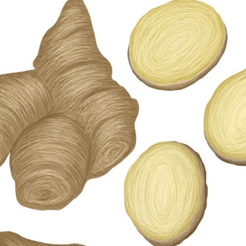

Woman Plus
2000 р.
ОПИСАНИЕ:
Женский организм нуждается в полезных микроэлементах в любом возрасте. Woman Plus это комплекс подобранный с учетом особенностей женского организма. Он поможет продлить молодость и сохранить женское здоровье, а также красоту кожи и волос, окажет положительное влияние на функционирование сердечно-сосудистой, пищеварительной, нервной, репродуктивной системы.ОБЛАСТЬ ПРИМЕНЕНИЯ:
- регулирование менструального цикла;
- уменьшение предменструальной боли;
- повышение уровня женских гормонов;
- предотвращение возникновения гинекологических заболеваний;
- сухость влагалища и проблемы с менопаузой;
- уменьшение боли и судорог мышц;
- повышение либидо;
- повышение эластичности кожи;
- уменьшение образования морщин.
СРОК ЭФФЕКТИВНОГО ВОЗДЕЙСТВИЯ:
48 часа с момента нанесения.СОДЕРЖИМОЕ УПАКОВКИ:
25 пластырей 130х94 мм.СОСТАВ АКТИВНОГО ВЕЩЕСТВА:
ЗОНЫ НАНЕСЕНИЯ:
Ниже пупка в районе паховой области. Достаточно наносить один пластырь за раз. В случае необходимости нанесения на несколько зон, пластырь можно разрезать на части. Замену пластыря рекомендуем производить через каждые 2 дня.ОПИСАНИЕ АКТИВНЫХ ЭЛЕМЕНТОВ
Цинк
- является одним из важнейших минералов, поскольку он не вырабатывается в организме человека, его необходимо получать извне.Цинк имеет много функций, таких как поддержка иммунной системы, укрепление волос, ногтей, поддержание здоровья кожи, увеличение минеральной плотности костной ткани, поддержка лечения глазных заболеваний.
Железо
В организме человека железо - принимает участие в образовании гемоглобина и участвует таким образом в переносе кислорода к органам и тканям, нормализует работу щитовидной железы, повышает иммунитет: устойчивость организма к заболеваниям, защищает от действия токсических веществ, участвует в обменных процессах и процессах кроветворения.

Имбирь
- его польза во многом связана с его антиоксидантными и противовоспалительными свойствами, а также наличием таких терапевтических соединений, как гингерол, шогаол, парадол и зингерон. На самом деле, из имбиря можно выделить более 100 соединений, которые наделяют его антиоксидантными, противораковыми и нейропротекторными свойствами.
Женьшень
- это природная кладезь полезных веществ. Женьшень использовался людьми еще с самых древних времен, исследования, проведенные во второй половине прошлого века, позволили досконально изучить женьшень, его свойства были подтверждены официальной медициной.Основным эффектом женьшеня является его сильное тонизирующее действие. Экстракт женьшеня при регулярном применении может повышать работоспособность и уменьшать утомление при больших физических нагрузках и во время напряженных стрессовых ситуаций.
Воздействие женьшеня на сердечно-сосудистую систему также достаточно выражено. В небольших дозах женьшень может повышать уровень артериального давления. Под его влиянием уменьшение частоты сердечного ритма, а амплитуда сердечных сокращений увеличивается.
Также женьшень способен улучшать кровоснабжение мозга и кроветворение. В исследованиях отмечались также его антидиуретические свойства и влияние на выработку половых гормонов.
Широкий спектр фармакологических свойств женьшеня определяет его популярность как в народной, так и в официальной медицине. Женьшень может применяться не только как общеукрепляющее и тонизирующее средство, но и как препарат для лечения различных астенических и депрессивных состояний.
Применение женьшеня рекомендуется во время послеоперационного периода, после тяжелых заболеваний или затяжных осложнений разного происхождения.

Омега-3
- являются незаменимыми жирными кислотами, которые организм не может воспроизвести, но должны быть взяты извне, потому что они используются в производстве клеточных мембран и многих гормонов.Благодаря своему вкладу в контроль пролиферации клеток, они оказывают потенциальное влияние на укрепление иммунной системы и в борьбе с опухолями.
Обладая противовоспалительным действием, они эффективны против воспалительных заболеваний кишечника (язвенный колит и болезнь Крона) и аутоиммунных ревматологических заболеваний.
Они снижают уровень жирных кислот в крови, повышают ЛПВП, известный как хороший холестерин, поэтому помогают предотвратить заболевания, связанные с закупоркой сосудов, такие как сердечный приступ и инсульт, предотвращают высокое кровяное давление.
Они имеют преимущества в уменьшении симптомов неврологических и психиатрических заболеваний и предотвращении возрастной потери зрения.
L-аргинин
- ценнейшая аминокислота способствует улучшению эректильной функции, полового влечения (у мужчин и женщин), повышению активности спермы и увеличению содержания в ней сперматозоидов. L-аргинин для сердечно-сосудистой системы способствует снижению повышенного артериального давления, образования атеросклеротических бляшек. L-Аргинин в спорте участвует в формировании мышечной ткани, улучшает питание мышц.
Красный клевер
- является одним из самых эффективных и потому популярных растений среди женщин, которые не только планируют беременность, но и вообще заботятся о своем женском здоровье. В чем же кроется причина такой любви женщин к красному клеверу? Среди травников и натуропатов очень много ценителей красного клевера. Традиционно это растение считается одним из лучших для лечения опухолевых заболеваний. Это также питательная трава, очищающая кровь. Поскольку красный клевер чрезмерно богат питательными соединениями, он часто используется в травяных смесях во время подготовки к беременности, в период беременности и период грудного вскармливания. Благодаря своему эстрогеноподобному действию, красный клевер широко применяется при климаксе. Цветы красного клевера содержат так называемые изофлавоны - растительные эстрогены. Именно они помогают справиться с неприятными состояниями при климаксе, когда у женщин перестает вырабатываться собственный эстроген в достаточном количестве.
Трибулус террестрис
Tribulus Terrestris в переводе с латинского - колючая лоза известен людям как лекарственное растение с давних пор. В Древней Греции это растение применялось в качестве мочегонного и тонизирующего средства. В Индии его использовали как антисептик. Китайцы считали «колючую лозу» универсальным лекарственным средством и лечили с его помощью почки, печень, сердце и другие органы. На Балканах она использовалась как лекарство от бесплодия мужчин.